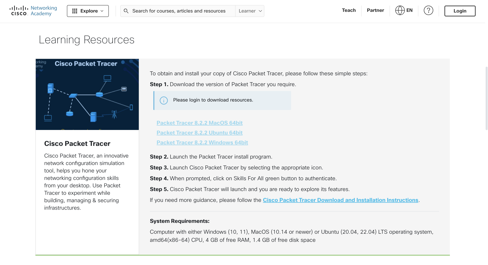
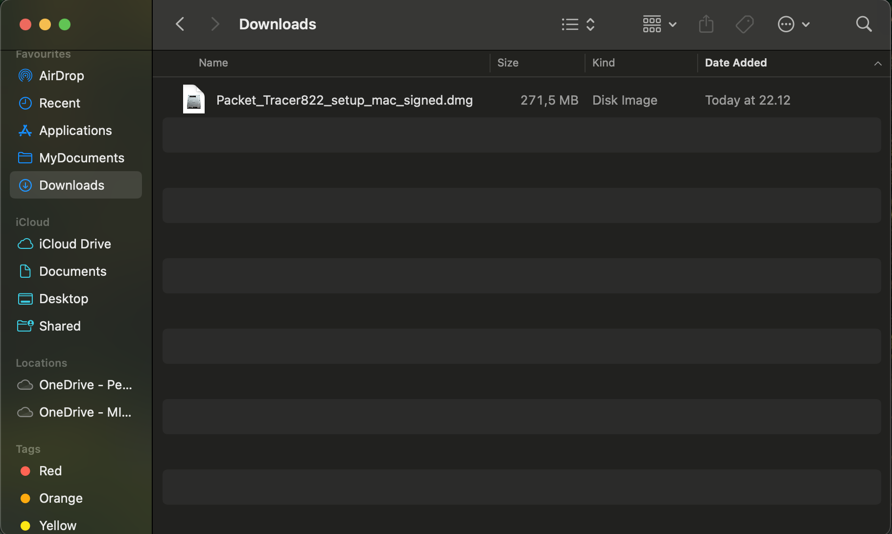
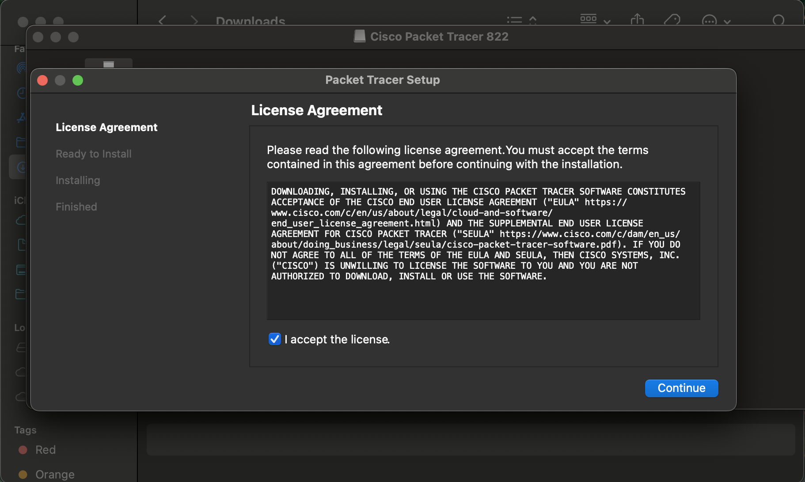
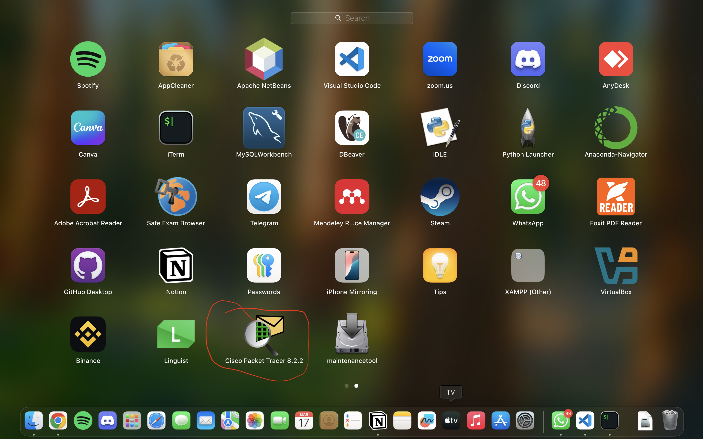
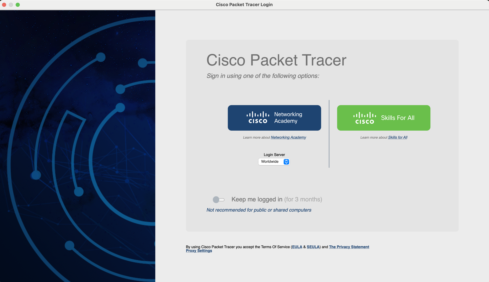
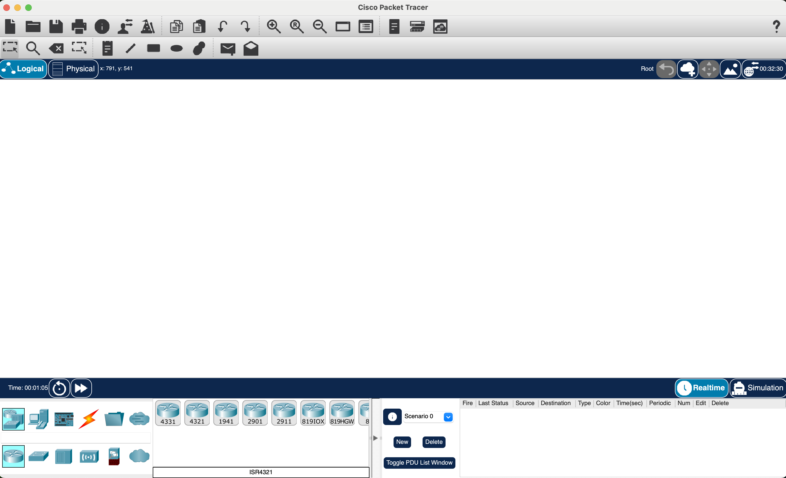

Pengenalan
Cisco Packet Tracer adalah alat simulasi jaringan yang dikembangkan oleh Cisco untuk membantu pembelajaran jaringan komputer secara virtual.
Spesifikasi Sistem
- OS: Windows 10/11, macOS, atau Linux
- RAM: Minimal 4GB (disarankan 8GB)
- Ruang penyimpanan: Minimal 1GB
- Prosesor: Intel/AMD 64-bit
- Koneksi Internet untuk aktivasi
Langkah-langkah Instalasi
- Unduh Cisco Packet Tracer dari situs resmi NetAcad.
Pastikan Anda mengunduh versi terbaru yang sesuai dengan sistem operasi Anda. - Login atau buat akun di NetAcad untuk mengakses unduhan.
Jika belum memiliki akun, Anda harus mendaftar terlebih dahulu. - Buka file installer setelah diunduh.
Jalankan installer dengan hak akses administrator untuk menghindari kendala saat instalasi. - Ikuti petunjuk instalasi hingga selesai.
Jika ada peringatan firewall atau antivirus, izinkan akses. - Buka aplikasi setelah instalasi selesai.
 - Login dengan akun NetAcad untuk aktivasi.
Gunakan kredensial NetAcad yang sudah dibuat untuk mengaktifkan fitur penuh. - Selesai! Cisco Packet Tracer siap digunakan.
